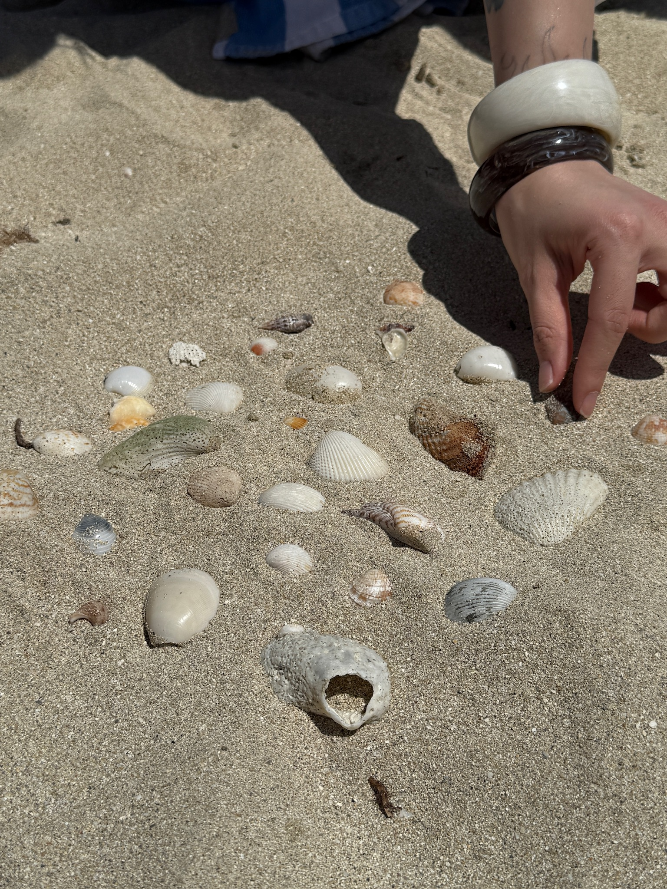
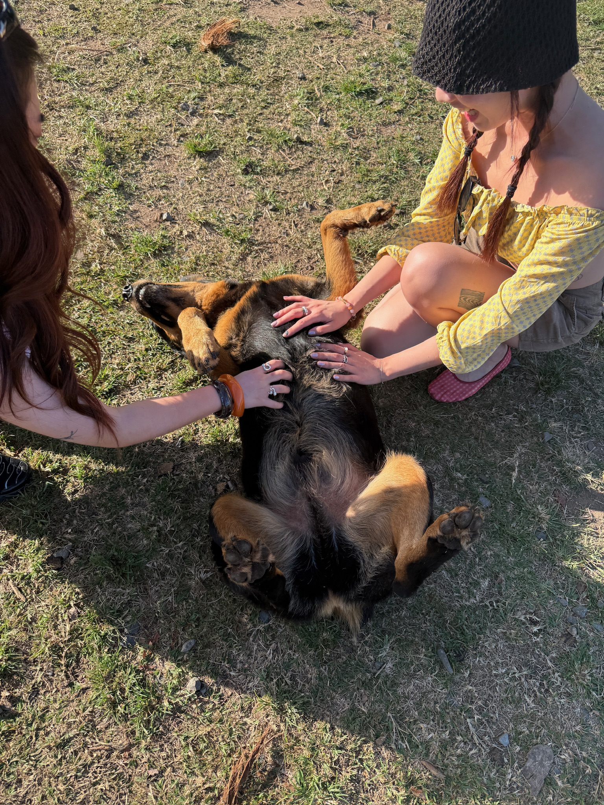
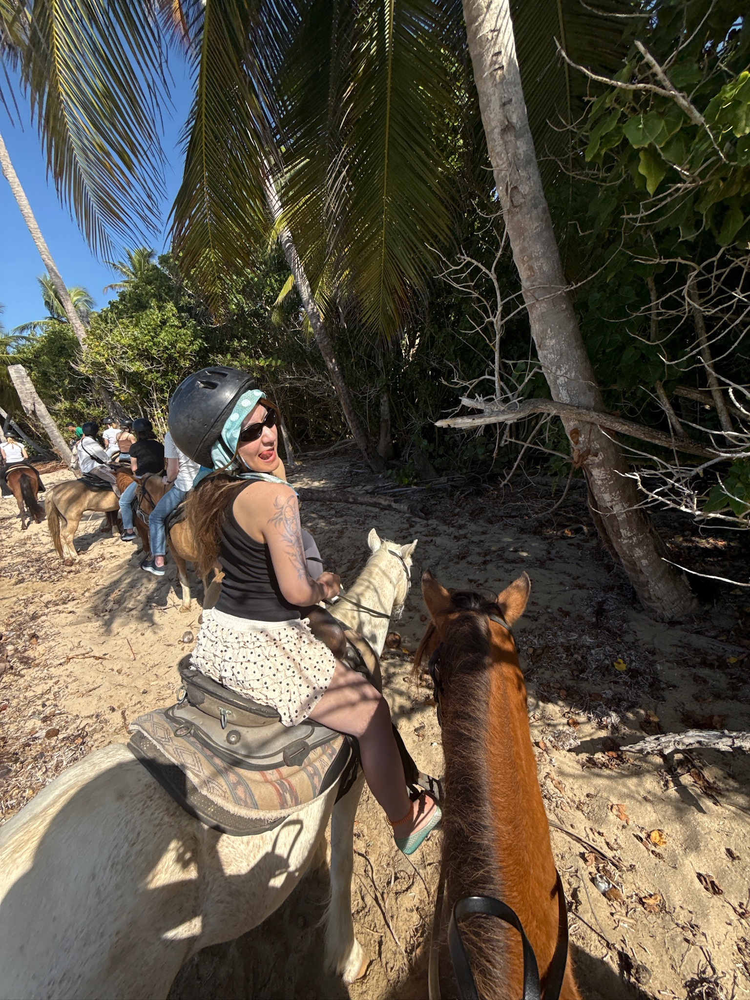
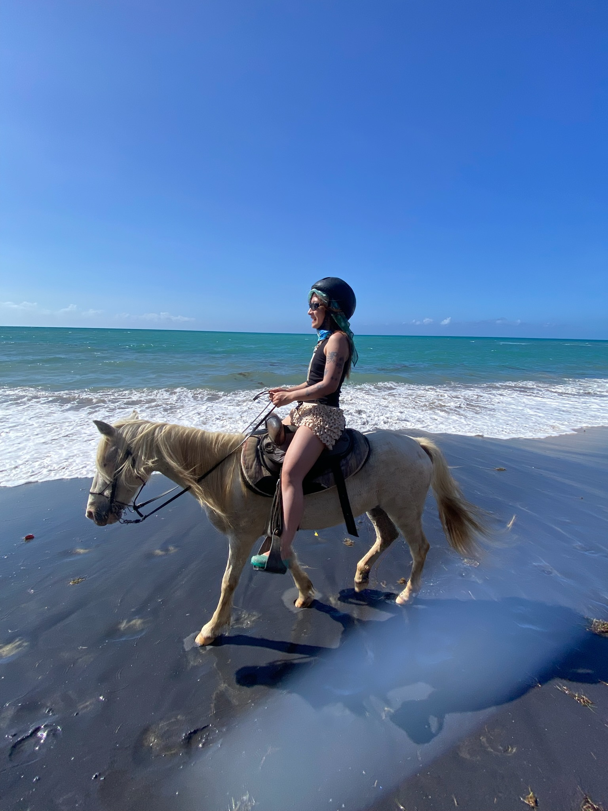
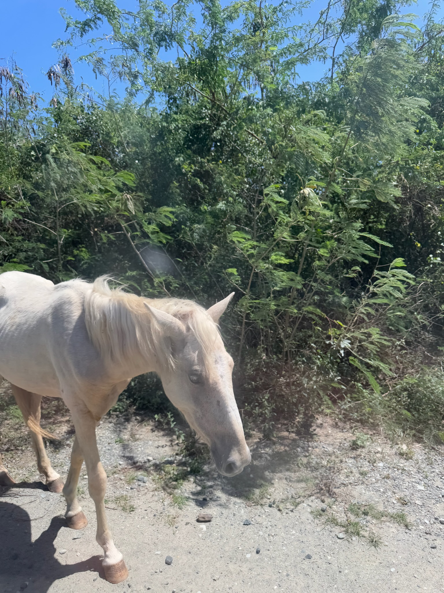

hi, this is a website recap of my trip to puerto rico in March 2025.
I went to the beach, ate some delicious food, and met some amazing people.
I can't wait to go back and explore more of the island.
I hope you enjoy the pictures and stories from my trip!
we woke up at 5 for this hike... it was very worth it!
Out hike tour guide, Andres, fed us pineapple and mango by the water fall.
lunch timeeee after our hike.
my first time having a burger w/ blue cheese?! yummy tho

shell collection was lowkey a competition.

this puppy belongs to the horse ranch we visited on Vieques island. The sweetest angel.

me on a horse, at the beach of Vieques island. My horse is Whitie and he loves to stop for snacks.

money shotttttttt. Whitie and I are serving.
Jessie getting ready on the balcony.
getting ready = messy beds...
Cantonese food on Vieques island! You read that right. We called up ReinaNam and asked the Cantonese owners to whip up fresh seafood dishes, off the menu!
the best lime margarita I have ever had. ft. a sauce holder repurposed from a beer case. Slay.
chickens everywhere!
interior of a dessert shop in San Juan.
an orange cat lived on the block of our Airbnb. We hung out everyday. He is blind in one eye and loves to follow us into the yard.

dreamy horses. there were just horses walking around everywhere on Vieques!! I am a horsegirl now.
Click the button below to change the background color of this page.